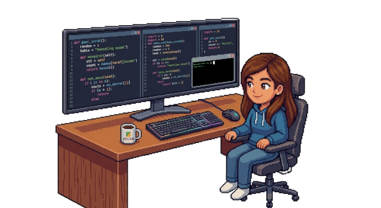

Meu Portifólio
Meu Portifólio Sobre mim
Olá, me chamo Evellyn, atualmente estou trabalhando como Aprendiz de TI e este é o meu primeiro projeto. Neste portifólio eu falo um pouco sobre mim, sobre minhas experiências e metas para o futuro.
Projetos
- Portifólio HTML
- Calculadora em Py
- Modelagem de banco de dados relacional
- Criação de protótipo de apricativos no figma
- Estudos e testes com ferramentas de IA generativa
Objetivos
Desenvolver as minhas habilidades nas áreas de tecnologia, Inteligência Artificial, Design digital e Programação, contribuindo para a minha empresa com criatividade e vontade. Tenho interesse em atuar em projetos inovadores, adquirir experiência prática e evoluir constantemente dentro da área.

Hobbies
- Ler: livros de ficção, romance, poesia, fantasia;

- Desenhar;

- Escrever: cartas, textos, poemas;

- Jogar video game;
- Assistir e julgar filmes premiados;
- Dançar;

- Cantar;

- Maquiagem artística;
Experiências
Atuaçao como auxiliar administrativo, desenvolvendo organização, comunicação profissional, trabalho em equipe e suporte às rotinas corporativas. Experiência com atividades administrativas, acompanhamento de processos internos e aprendizado contínuo em ambiente empresarial.
Estudos
Ensino médio completo e atualmente cursando ensino superior na área de tecnologia, com foco no desenvolvimento de conhecimentos em áreas como Inteligência artifical, programação, banco de dados, design digital e ferramentas tecnológicas. Também realizo cursos complementares para aprimorar habilidades práticas e acompanhar inovações da área.
Reflexões
Existe uma pressão enorme para que aos 20 anos você já saiba exatamente onde vai estar aos 30, 40 ou 50. Mas a verdade é que a carreira não é um bloco de pedra imutável; ela funciona mais como um software em constante atualização. O importante agora não é ter todas as respostas, mas sim estar testando os caminhos, errando rápido e corrigindo a rota. Cada escolha atual é só uma linha de código que você escreve no seu histórico.